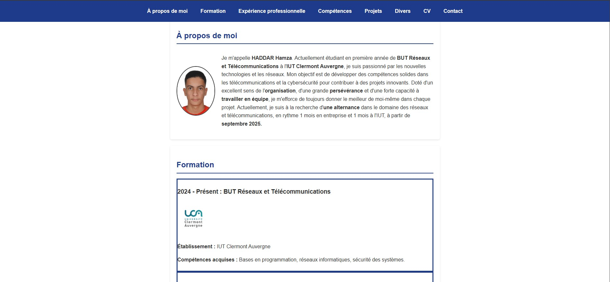
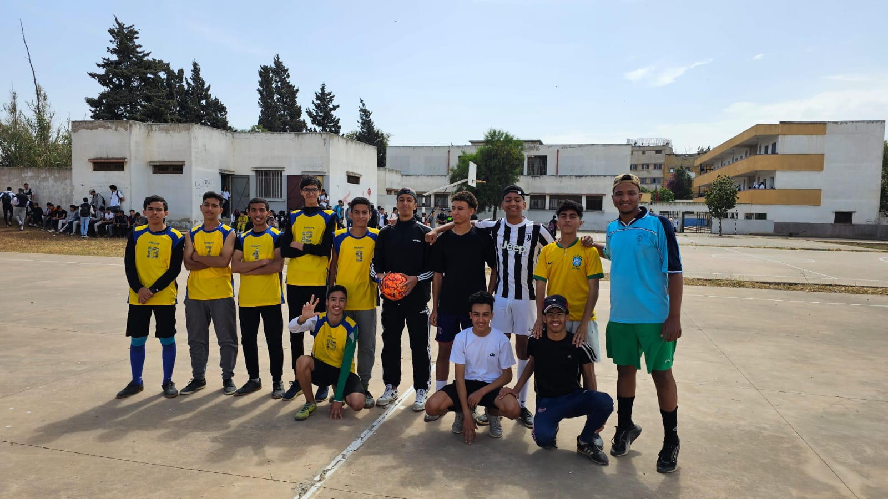
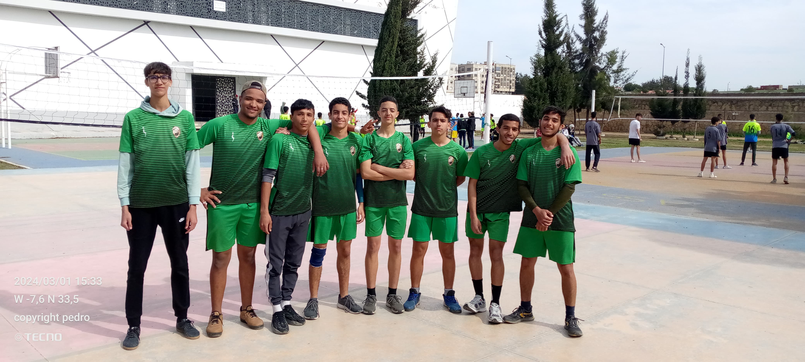

11/2024 - Présent : Inventoriste chez RGIS

Objectif : Participer au comptage des stocks dans différents magasins et assurer l'exactitude des inventaires.
Travail réalisé : Utilisation d'équipements spécifiques tels que des scanners de codes-barres pour effectuer le comptage des produits, vérification de la qualité des données saisies dans le système informatique, et organisation du travail en équipe pour une comptabilisation rapide et précise.
Résultats obtenus : Contribution efficace à la précision des inventaires, respect des délais imposés pour l'achèvement du comptage et amélioration de la gestion des stocks grâce à des inventaires plus fiables.
Compétences
Compétences personnelles
- Organisation : Capacité à gérer efficacement mon temps et mes priorités pour réussir mes études et mes projets.
- Travail en équipe : Aptitude à collaborer avec mes camarades, partager des idées et résoudre des problèmes de manière collective dans le cadre de projets et de travaux pratiques.
- Persévérance : Détermination à surmonter les difficultés et à continuer à progresser, même face à des défis complexes, afin d'atteindre mes objectifs académiques et professionnels.
Compétences techniques
- Programmation : Compétences en Python pour l'automatisation de tâches et en développement de scripts, ainsi que de bases en HTML et CSS pour la création de sites web simples.
- Réseaux et télécommunications : Connaissances des concepts fondamentaux des réseaux (IP, DHCP, DNS, etc.), de la configuration de matériels et logiciels réseau, et de la gestion de l'infrastructure réseau dans des environnements de travail réels.
- Systèmes d'exploitation : Maîtrise de l'installation et de la configuration de systèmes d'exploitation, notamment Linux, pour l'administration des serveurs et la gestion des réseaux.
- Analyse de données réseau : Compétence dans l'utilisation d'outils pour analyser et surveiller les performances des réseaux, détecter des anomalies et optimiser la gestion des ressources réseau.
Compétences linguistiques
- Arabe : Langue maternelle
- Français : B2 (Ouvrir le certificat)
- Anglais : intermédiaire
Projets
SAE 14 - Portfolio
Objectif : Créer un portfolio personnel pour présenter mes compétences, mon parcours académique et mes expériences professionnelles de manière structurée et professionnelle.
Contexte : Ce projet a été réalisé en autonomie, dans un temps limité d'environ 8 heures. L'objectif était de concevoir un site web simple et efficace, tout en appliquant les compétences acquises en HTML, CSS, et en structuration de contenu pour le web.
Étapes de réalisation :
- Planification : Définition du contenu à inclure dans le portfolio, notamment les sections "Compétences", "Projets", "Expérience professionnelle" et "Contact".
- Conception : Création de la maquette du site avec une mise en page claire et responsive, en utilisant HTML et CSS pour structurer et styliser les différentes sections.
- Développement : Codage des différentes pages du portfolio, en intégrant des éléments comme des menus de navigation, des sections de texte et des images. Application des bonnes pratiques pour le référencement et l'accessibilité du site.
- Test et ajustements : Vérification du bon fonctionnement du site sur différents navigateurs et dispositifs, ainsi que l'ajustement des styles et de la mise en page pour assurer une expérience utilisateur optimale.
Note : L'évaluation du projet n'a pas encore été réalisée.
Divers
-
Passion pour le football
Mon parcours dans le football : Depuis mon enfance, le football a toujours été une passion qui occupe une place importante dans ma vie. J’ai commencé à jouer dès mon plus jeune âge, ce qui fait maintenant plusieurs années d’expérience et de plaisir sur les terrains. Jouer au football me procure une immense satisfaction : l’adrénaline pendant le match, la camaraderie entre coéquipiers et le simple bonheur de courir derrière le ballon sont des sentiments qui me motivent à continuer.
Mon poste préféré : Je suis un joueur polyvalent, capable de m’adapter à plusieurs postes selon les besoins de l’équipe. Cependant, ma préférence va à la défense. J’aime analyser le jeu, protéger ma zone, et m’assurer que mon équipe reste solide face aux attaques adverses. Être défenseur me permet d’exprimer ma rigueur et ma détermination sur le terrain.
Mes expériences dans le football :Au fil des années, j’ai participé à de nombreux tournois, dont des tournois scolaires comme celui sur la photo, ainsi qu’à des matchs amicaux réguliers avec mes amis. À une époque, je jouais presque tous les jours, ou au minimum un match tous les deux jours. Ce rythme m’a permis de développer mes compétences, d’affiner ma technique et de vivre des moments inoubliables avec des coéquipiers qui partagent ma passion.
 -
Engagement dans le volleyball
Mon parcours dans le volleyball : J’ai commencé à jouer au volleyball il y a presque 4 ans, et depuis, ce sport est devenu une véritable passion. Ce que j’apprécie le plus, c’est la coordination et la communication essentielles pour exceller en équipe. De plus, l’intensité et la concurrence sur le terrain rendent chaque match captivant et stimulant.
Mon poste préféré : Comme vous le savez, au volleyball, les joueurs doivent tourner et occuper tous les postes au fil du jeu. Cependant, j’ai une préférence pour jouer sur la ligne des attaquants. Être en première ligne me permet d’exprimer mon dynamisme et ma capacité à marquer des points pour mon équipe.
Mes expériences dans le voleyball :Au cours de ces années, j’ai participé à plusieurs tournois, notamment un tournoi scolaire dont cette photo témoigne. Ce match, en particulier, reste un souvenir marquant pour notre équipe et pour moi.
 -
Autres loisirs
En dehors du sport, j'aime explorer les nouvelles technologies, regarder des documentaires scientifiques, et lire des livres de développement personnel.